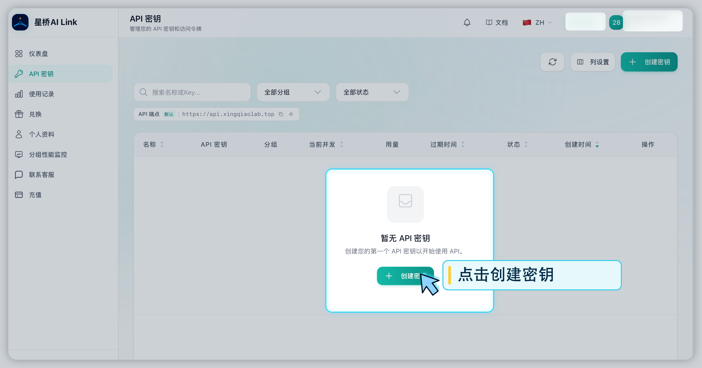
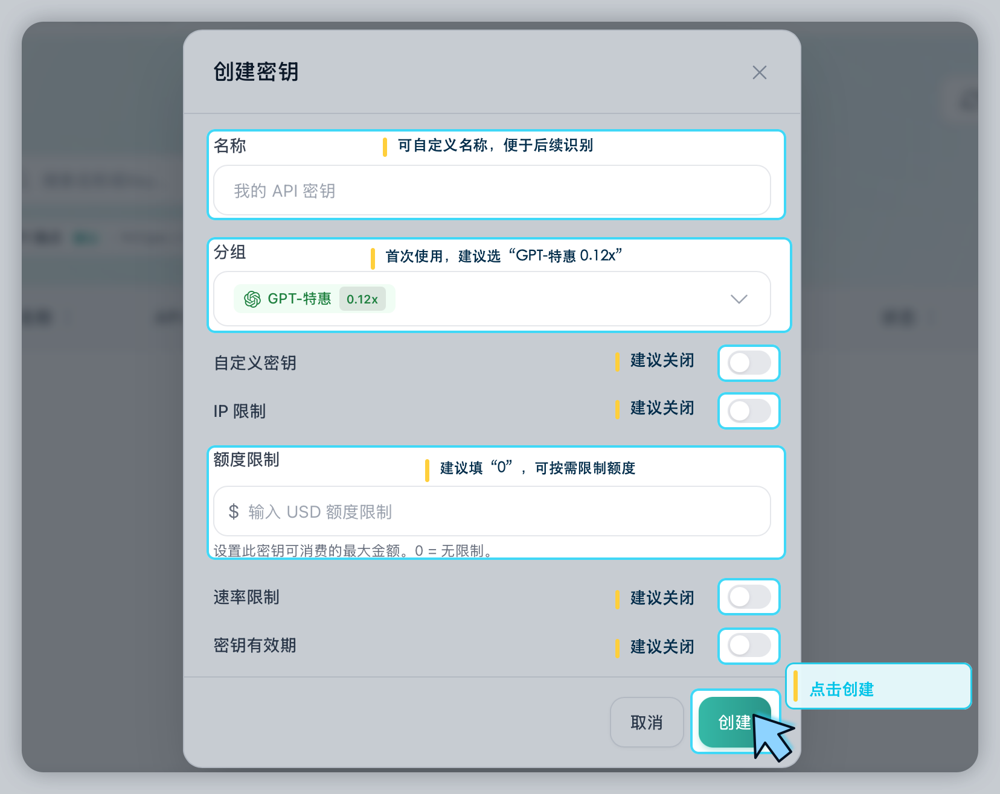
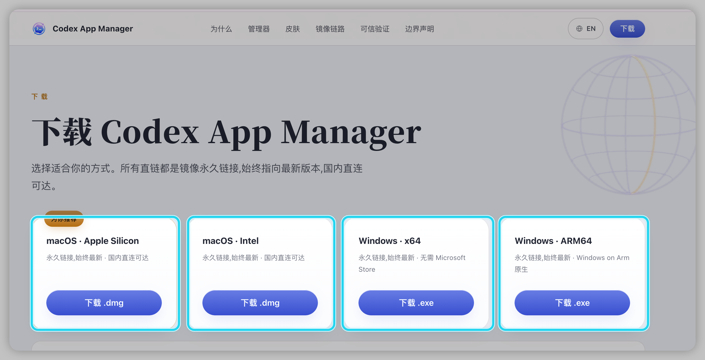
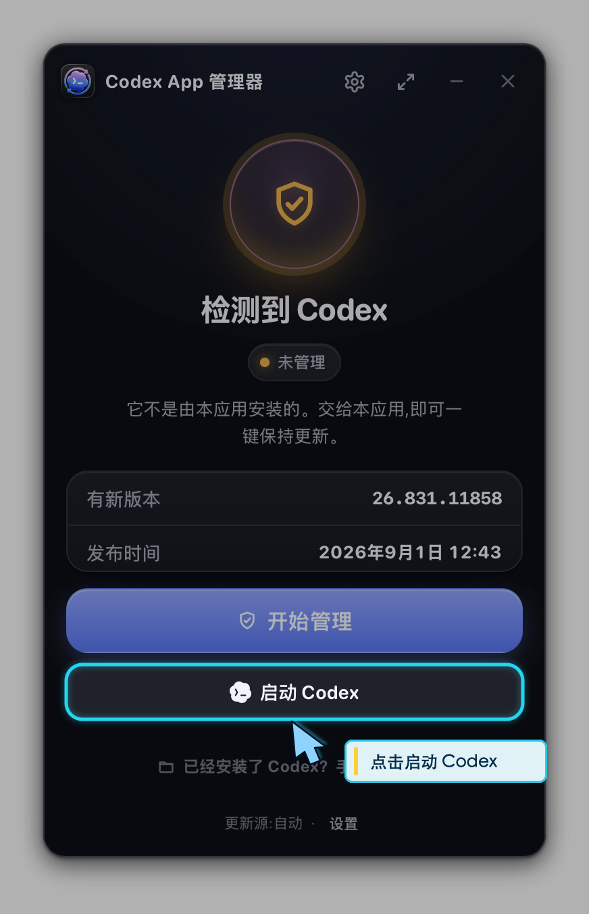
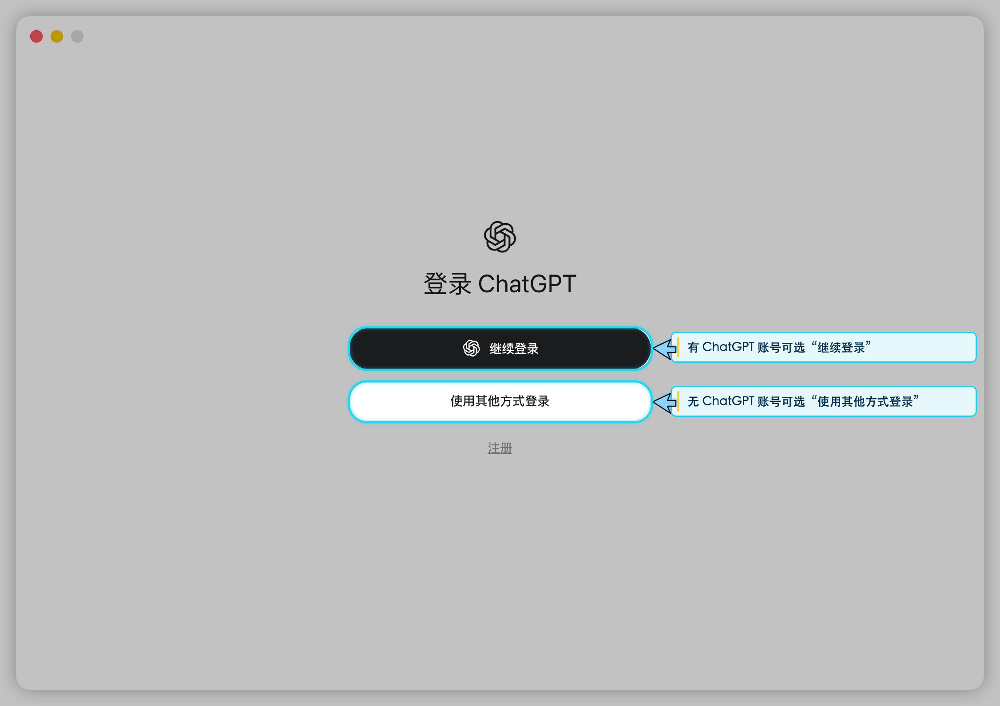
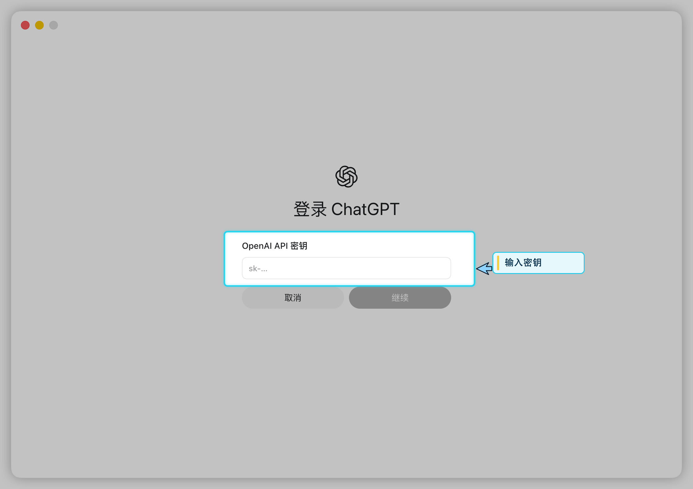
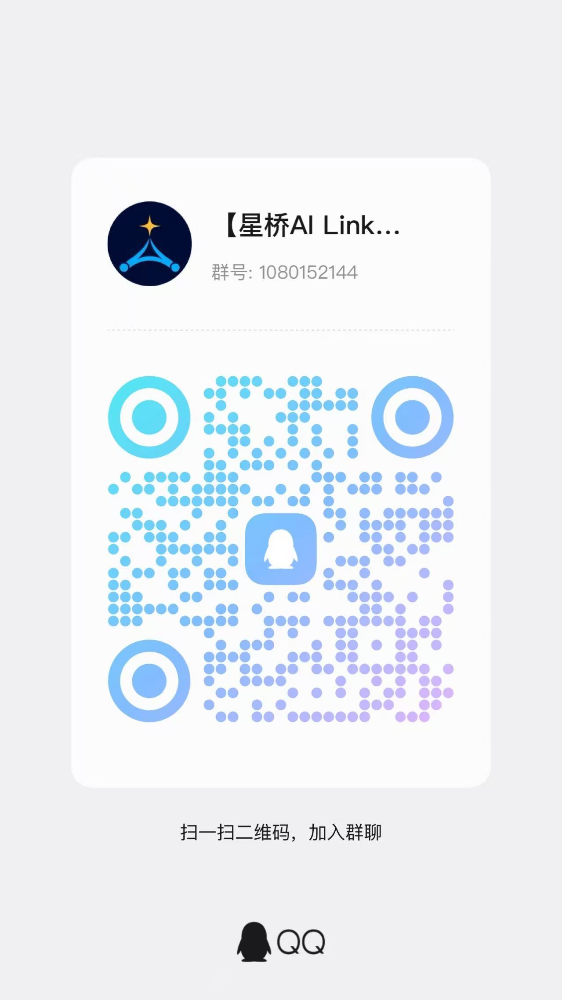

01
STEP 01
一、开始前准备
操作步骤
开始前，请确认你已经准备好：
- 一台 Windows、macOS 或 Linux 电脑
- 符合使用要求的网络环境（VPN）
- 如果电脑中已经打开 Codex，请先完全退出，完成配置后再重新启动。
STARLINK FUTURE · CODEX
本教程旨在帮助新手完成 Codex 的安装、配置和首次测试。
STEP 01
开始前，请确认你已经准备好：
STEP 03
安装 CC Switch
安装完成后：保持CC Switch打开
STEP 04
密钥页面入口：https://api.xingqiaolab.top/keys
打开密钥页面并创建密钥，按页面提示完成填写。


API 密钥关联您的账户额度，请勿泄露或转发给他人。密钥一旦被他人使用，可能导致您的额度被消耗。
STEP 05
在密钥列表中点击「导入到 CCS」。
浏览器询问是否打开 CC Switch 时，选择允许。
确认 CC Switch 已安装并正在运行；换 Safari、Chrome 或 Edge 再点击一次「导入到 CCS」。
STEP 07
Codex 安装入口：https://codexapp.agentsmirror.com/
根据你的电脑系统下载安装 Codex。


STEP 08
有Open AI 账号：可选 [ 继续登陆 ]。
无Open AI 账号：选用 [ 其他方式登陆 ]。


STEP 09
进入 星桥AI Link 复制密钥。
返回 ChatGPT 登陆界面粘贴密钥。
需要进行小额充值，确保星桥 AI Link 账号有可用额度，才能调用 Codex。
STEP 10
进入 星桥AI Link 完成小额充值。
确认充值额度到账。
打开 Codex 完成测试。
ALL SET · STARLINK FUTURE
恭喜你完成 Codex 的安装、配置与首次测试！
从现在开始，
你可以把更多时间留给真正重要的事情——
把任务交给 Codex，剩下的交给它慢慢折腾。 😎
NEED HELP?
JOIN THE COMMUNITY
欢迎加入星桥 AI Link 官方交流群！
